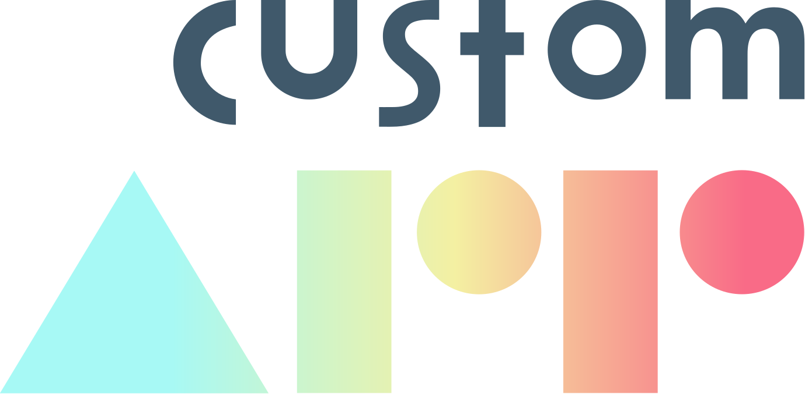

Ngx CustomApp SDK
SDK allowing you to quickly set up an authorization and a websocket life cycle in an Angular app. Includes JWT, WebSocket and error management. Some useful utils are also included.
DOCUMENTATION